Кинорит · M23 · реальные кадры приложения
Движение помогает прочитать данные
Записи и снимки работающего интерфейса на локальной производственной сборке. Синтетические события обозначены в приложении; числа рассчитаны рабочей логикой. Во время появления результат сразу показывает настоящее значение.
Рабочий вопрос: телефон или компьютер?
Открыть запись
Открыть запись
Семь основных страниц
Обычные снимки браузера. Нажмите на изображение, чтобы открыть оригинал. Движение оценивайте по записи выше, а не по одному кадру.

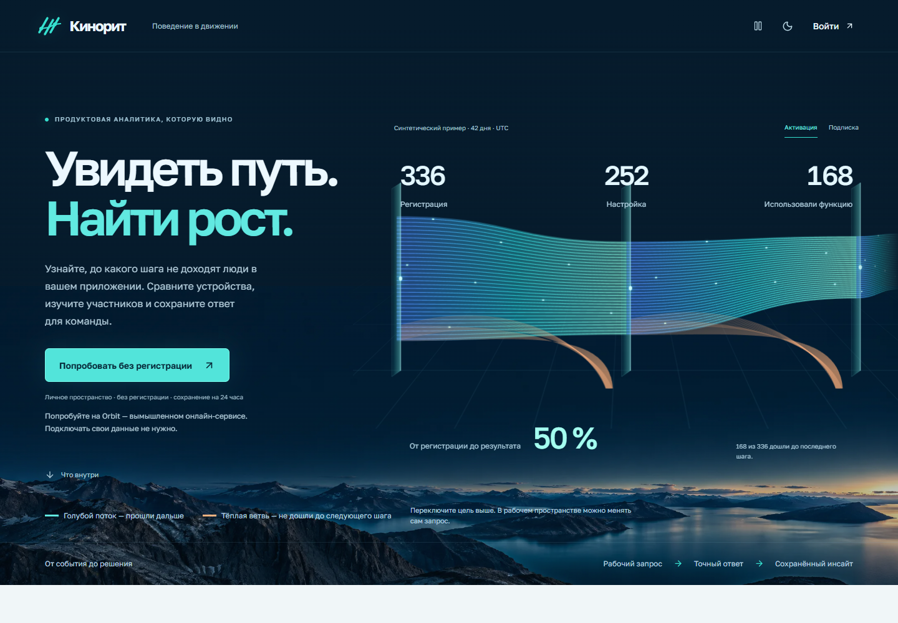

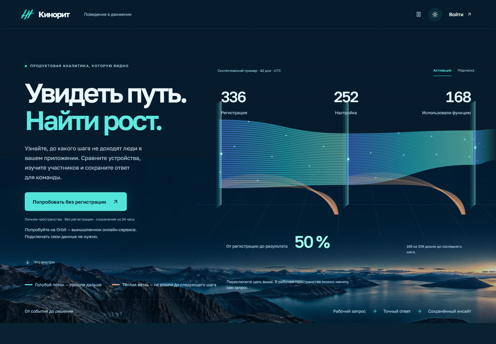


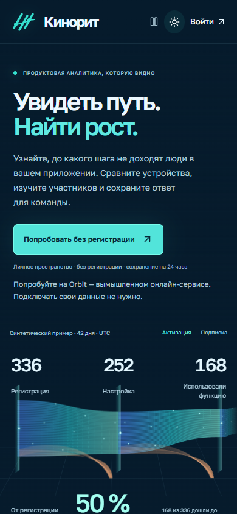

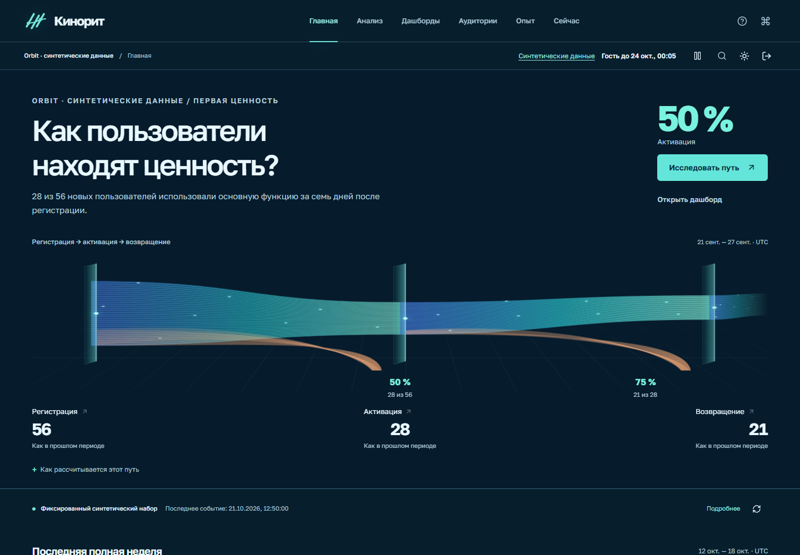

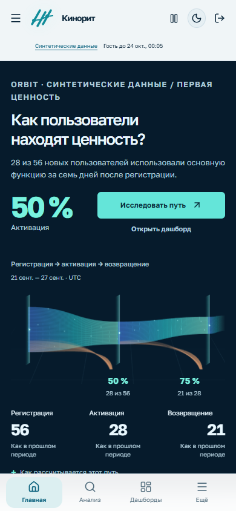

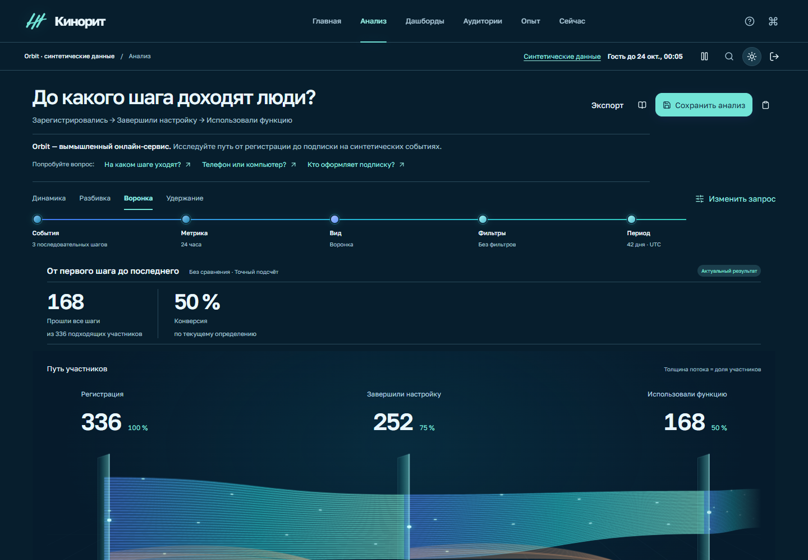

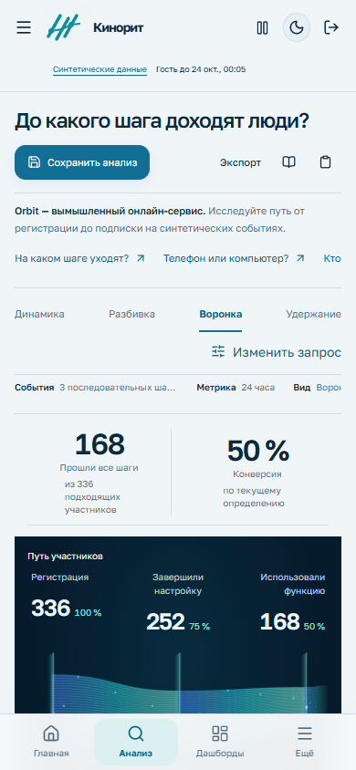

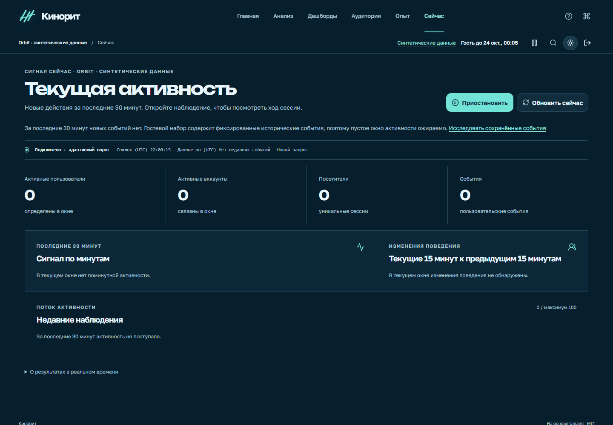

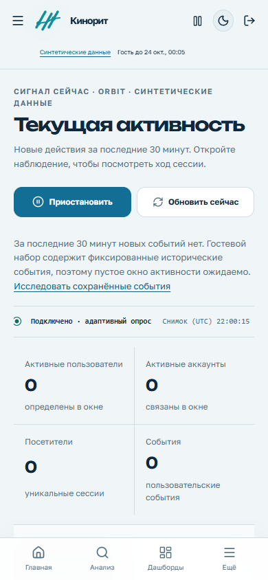

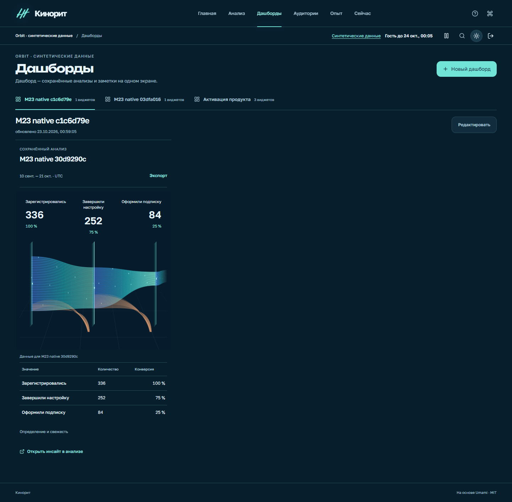

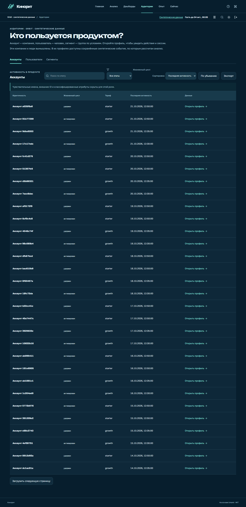

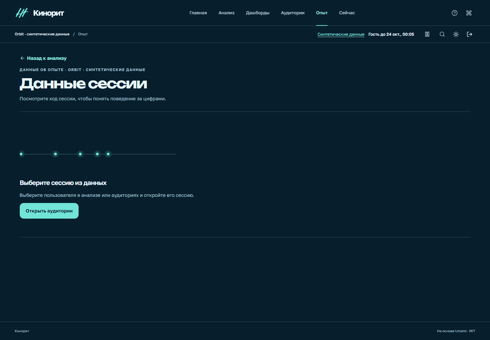
Проверки и границы
- 42 адаптивных случая на dev-сервере: 7 страниц × 320, 390, 768, 1440, 2560 и 7680 CSSpx; без переполнения. Проверены 120 положений фокуса.
- Реальные промежуточные формы SVG и точная конечная геометрия; пауза, сокращённое движение и выход за экран.
- Редактор 320×568 и 568×320, клавиатурные вкладки, мобильная навигация, совпадение чисел и времени со снимком API.
- 96 линий и 24 пульса; активные циклы: 24 в видимой сцене, 0 за экраном, при паузе и сокращённом движении.
- Headless Chrome и WebKit не переводят настоящую вкладку в hidden в этом окружении. Реальное фоновое поведение отдельно не подтверждено; политика покрыта компонентными тестами.
- Матрица и диагностика выполнены на dev-сервере, финальные кадры — на production-сборке; без заявления о производительности на 1 млн событий или всех физических устройствах.
Исходники: bc1147851b6a254edf45071e2e8e0d78f57b2f8a. Материалы содержат только интерфейс и синтетические данные; cookies и токены не включены.
Код приложения совпадает с опубликованной версией e8fb05a90; изменения после сборки относятся к тестам.